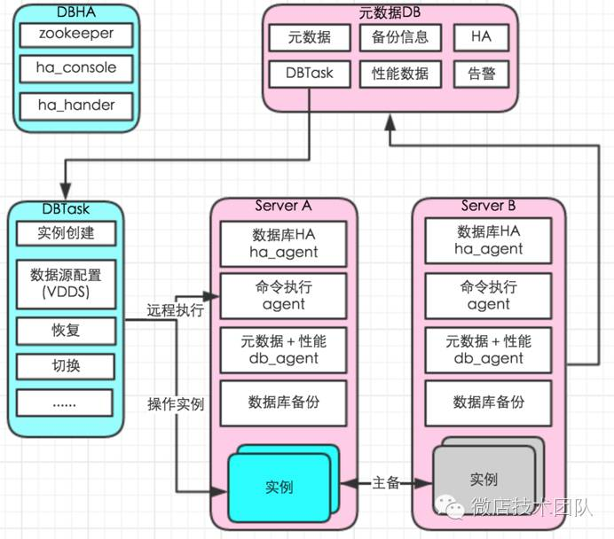

微店MySQL自动化运维实践
前言
互联网时代，数据库如何满足敏捷开发，敏捷交付的要求。传统靠DBA人肉执行的方式，在面对大量业务需求时，DBA手速再快，记忆力再好估计也不能提供好的数据库服务。在介绍自动化运维之前，我们来了解下是怎么使用数据库的。
数据库的使用方式主要有两种：
应用混合部署（实例）：有新数据库需求时，很多人都会选择找个实例，建个数据库和帐号提供给业务。好处是能快速提供数据库服务，这种方式在数据库运维的过程中会出现一些问题：第一，相互影响，个别应用有问题会影响所有数据库；第二， 应用DB的性能指标（qps, tps, rt...）不能获取；第三，定位问题源困难；第四，资源使用不合理。为了解决以上问题，最终会有拆库的过程，拆过库的同学都知道，一个拆库动作需要确认很多东西，所花费的时间是非常多的，过程中容易产生故障。
应用独享（实例）：在虚拟化，微服务深入人心的今天，应用独享实例是数据库给出的解决办法。我们做到的是所有应用独享实例（分库分表的应用如：分成32个库的应用，业务初期阶段会分布在几个实例中，业务确实需要更多资源时再进行自动化拆库扩容）。这种方式需要大量的实例，传统单机单实例的运维体系就需要演变成单机多实例的方式。
由此引出会有一系列问题需要解决：如何快速提供数据库服务？如何避免数据库资源合理分配？数据库监控怎么做？多实例数据库HA怎么做？
MySQL的标准化与自动化
我们实现的MySQL自动化运维体系能够解决规模化的痛点，主要包括实例创建、部署、监控、备份、HA切换、迁移、扩容等的自动化，所有模块的主发点是要能“自动化”的方式运作，尽量少的人为参与。
一、标准化
数据库上了一定规模后，数据库的各方面都需要标准规范起来，才能接下去做自动化。实例上的标准化我们主要做了以下几点：
1.应用独享实例
2.数据库Ｍ<==>S结构，备库不提供业务流量（异地容灾除外）
很多人会选择一主多备，备库提供读流量。这种架构引起的故障挺多的，因为备库一定会存在延时，备库机器也会挂掉。事实上大部分时候流量都在主库是没问题，如果确实主库压力真的太大怎么办，我们应该及时发现问题并作出应对（方法可以是缓存＋拆库）。
3.MySQL标准化（带thread_pool 功能MySQL）
数据库版本一致
“相同”的my.cnf（除个别个性参数如server_id,buffer_pool_size等）
文件目录一致
二、构建MySQL自动化运维体系
一套很好的大规模运维体系DBManage，整体思路是让一切自动化起来，不需要打通机器间的信任关系，避免或减少人为参与。

1.多实例创建
一台机器上面开启多个不同的端口，运行多个MySQL服务进程，共用MySQL程序，使用不同配置文件，提供服务。
关键点：
“相同”的my.cnf（除个别个性参数如server_id,buffer_pool_size等）
数据文件目录标准化
创建实例（1.初始化一个标准的数据库，2.新建实例通过rsync控制速率，通过修改 " my.cnf " 文件新建不同实例，因为mysql_install_db安装新实例会占用过多IO)
2. 元数据与监控
数据库监控没有采用类似“lepus”的方式，中心控制的方式对于规模化精细华数据库管理冲突。中心化存在问题1：增加实例需要手动录入；问题2：不能获取响应时间RT(tcprstat)；问题3：不能获取主机性能数据等等。我们采用自研 db_agent 实现实例的自动发现，各项元数据及性能数据采集，告别人工处理。
每台数据库服务器上运行db_agent；自动发现实例，自动采集实例数据，主机数据，磁盘数据，自动添加监控。db_agent主要实现以下功能。
采集实例信息(数据库列表，复制信息，表元数据等等)
心跳更新（每秒更新，因为show slave status的延时是不可靠的）
数据库性能数据( QPS, TPS......)
数据库响应时间RT(tcprstat)
实时慢SQL
主机性能数据(告别zabbix)
3. 备份
数据库机器部署备份脚本（不区分是否主备机器），告别手动配置。
只备份备库（备份前判断脚色）
多实例并发控制（控制速率及时间）
直接写入hdfs 或server(推荐hdfs存储)
4. 本地执行agent
远程操作DB机器（创建实例，恢复数据库，etc），通过自定义一些消息调起DB机器对应脚本进行操作
5. 监控告警
基于db_agent采集数据，性能画图及告警。性能数据写入graphite
6. MySQL高可用
传统的使用MHA做MySQL HA架构是比较通用的方案，主要特点：通过Health Check 监控MySQL集群，应用通过VIP访问MySQL，VIP通过keepalive选主。这里不展开这种方式和一些改进型（zookeeper +MHA）的痛点，主要讲下多实例下基于zookeeper是怎么实现MySQL自动化高可用。
改造后的HA架构，跟通常架构的区别在于我们去掉了MySQL集群里的VIP，使用VDDS替代；完全去掉MHA。通过zookeeper分布式，实现ha_console的高可用。

整个流程是
VDDS(微店分布式数据库) 新建应用配置
ha_agent向zookeeper注册临时节点，并实时更新实例信息。
{
"source_db_role": "slave",
"master_instance": "192.168.1.12_3306",
"repl_status": "ok",
"h_time_delay": 0,
"repl_delay": 0,
"last_change_time": "2016-10-15-01:00:45"
}
ha_console根据zookeeper节点信息构造切换元数据（包括延时，切换对象，复制状态）
"192.168.1.11_3306": "{
"source_db_role": "master",
"master_instance": "192.168.1.12_3306",
"repl_status": "ok",
"h_time_delay": 0,
"repl_delay": 0,
"last_change_time": "2016-10-15-01:00:45"
}"
ha_console监听alive目录临时节点
alive目录临时节点消失进行切换（判断延时及复制状态，不符合条件不切换），切换VDDS和数据库
切换前记录切换信息（slave：master_log_file: mysql-bin.000007，exec_master_log_pos: 57830。主库恢复后，用来生成日志解析）
场景一：实例Crash，实例所在的服务器正常运行，ha_agent运行正常
实例Crash，ha_agent 正常运行，主动删除zookeeper 临时节点，ha_console 判断数据库角色，是主库走切换流程。原实例起来之后，作为备库运行。
场景二：实例所在的主机Crash。（实例和ha_agent同时Crash）
此时，由于ha_agent和实例同时Crash，zookeeper到ha_agent间的通讯失败。zookeeper 等待超过租约的时间，ha_console 判断数据库角色，是主库走切换流程。原实例起来之后，作为备库运行。
场景三：实例正常，网络异常
网络异常会发生大量实例掉线或部份异常。大量节点异常：ha_console判断时间范围内异常实例数量，超过阀值不进行切换，同时切换过程：切换脚本会去判断数据库状态，避免误切。（zookeeper client 连接掉线后，尽管实例及ha_agent正常运行，节点不能重用必须等待超时)
特点：完全不需要人工建入，切换元数据自动构建，所有实例自动注册，构造完整的切换元数据，避免了繁锁的配置或配置出错导致不能切换。
7.DBTask
通过DBTask 替代人工操作。实现了数据库创建，配置VDDS, 数据库迁移，拆库扩容，恢复等等。整体思路是分解动作，每个脚本干一件事，再串起所有脚本。以数据库迁移为例我们可以分解为各个子任务，串起任务就是一个完整的自动化数据库迁移任务。
数据库迁移：
申请可用资源
实例创建
恢复备库A
恢复备库B
配置数据源(VDDS)
切换前检查
切换
清除VDDS配置
关闭老实例
数据库资源申请：
申请可用资源
实例创建
新建库，MySQL帐号
配置数据源(VDDS)
成果及展望
全套自动化运维体系采用：后台由python+shell+go(实时慢sql解析部分)；前端采用laravel+angularjs。 目前单机日常环境运行100+实例，agent的资源占用不多；业务申请数据库资源<1分钟完成；自动化拆库（部份老的合在一起的还是要拆的?）等等。另外随着MySQL自动化运维的深入，慢慢的发现这将会演变数据库成私有云平台。对于如何更好的服务业务，如何诊断业务数据库等等都需要我们去完善。
参考资料
python socket通信：
https://github.com/chris-piekarski/python-json-socket
python hdfs
https://pypi.python.org/pypi/hdfs/
响应时间(rt):
https://github.com/Lowercases/tcprstat
python zookeeper:
https://github.com/python-zk/kazoo
go tidb解析sql 中的表（用来合并分表）
https://github.com/pingcap/tidb